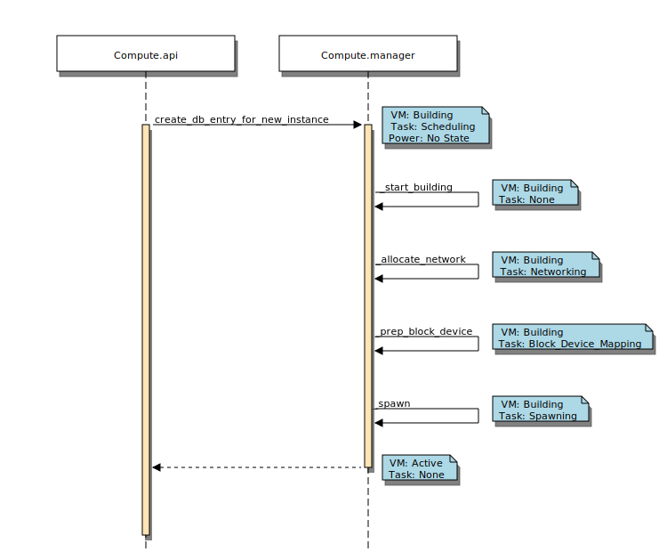

Virtual Machine States and Transitions¶
The following diagrams and tables show the required virtual machine (VM) states and task states for various commands issued by the user.
Allowed State Transitions¶
![digraph states {
graph [pad=".35", ranksep="0.65", nodesep="0.55", concentrate=true];
node [fontsize=10 fontname="Monospace"];
edge [arrowhead="normal", arrowsize="0.8"];
label="All states are allowed to transition to DELETED and ERROR.";
forcelabels=true;
labelloc=bottom;
labeljust=left;
/* states */
building [label="BUILDING"]
active [label="ACTIVE"]
paused [label="PAUSED"]
suspended [label="SUSPENDED"]
stopped [label="STOPPED"]
rescued [label="RESCUED"]
resized [label="RESIZED"]
soft_deleted [label="SOFT_DELETED"]
shelved [label="SHELVED"]
shelved_offloaded [label="SHELVED_OFFLOADED"]
deleted [label="DELETED", color="red"]
error [label="ERROR", color="red"]
/* transitions [action] */
building -> active
active -> active [headport=nw, tailport=ne] // manual layout
active -> soft_deleted [tailport=e] // prevent arrowhead overlap
active -> suspended
active -> paused [tailport=w] // prevent arrowhead overlap
active -> stopped
active -> shelved
active -> shelved_offloaded
active -> rescued
active -> resized
soft_deleted -> active [headport=e] // prevent arrowhead overlap
suspended -> active
suspended -> shelved
suspended -> shelved_offloaded
paused -> active
paused -> shelved
paused -> shelved_offloaded
stopped -> active
stopped -> stopped [headport=nw, tailport=ne] // manual layout
stopped -> resized
stopped -> rescued
stopped -> shelved
stopped -> shelved_offloaded
resized -> active
rescued -> active
shelved -> shelved_offloaded
shelved -> active
shelved_offloaded -> active
}](_images/graphviz-aa3b50f03fc95e5ea0896d5f2c606d809e3e2741.png)
Requirements for Commands¶
| Command | Req’d VM States | Req’d Task States | Target State |
|---|---|---|---|
| pause | Active, Shutoff, Rescued | Resize Verify, unset | Paused |
| unpause | Paused | N/A | Active |
| suspend | Active, Shutoff | N/A | Suspended |
| resume | Suspended | N/A | Active |
| rescue | Active, Shutoff | Resize Verify, unset | Rescued |
| unrescue | Rescued | N/A | Active |
| set admin password | Active | N/A | Active |
| rebuild | Active, Shutoff | Resize Verify, unset | Active |
| force delete | Soft Deleted | N/A | Deleted |
| restore | Soft Deleted | N/A | Active |
| soft delete | Active, Shutoff, Error | N/A | Soft Deleted |
| delete | Active, Shutoff, Building, Rescued, Error | N/A | Deleted |
| backup | Active, Shutoff | N/A | Active, Shutoff |
| snapshot | Active, Shutoff | N/A | Active, Shutoff |
| start | Shutoff, Stopped | N/A | Active |
| stop | Active, Shutoff, Rescued | Resize Verify, unset | Stopped |
| reboot | Active, Shutoff, Rescued | Resize Verify, unset | Active |
| resize | Active, Shutoff | Resize Verify, unset | Resized |
| revert resize | Active, Shutoff | Resize Verify, unset | Active |
| confirm resize | Active, Shutoff | Resize Verify, unset | Active |
VM states and Possible Commands¶
| VM State | Commands |
|---|---|
| Paused | unpause |
| Suspended | resume |
| Active | set admin password, suspend, pause, rescue, rebuild, soft delete, delete, backup, snapshot, stop, reboot, resize, revert resize, confirm resize |
| Shutoff | suspend, pause, rescue, rebuild, soft delete, delete, backup, start, snapshot, stop, reboot, resize, revert resize, confirm resize |
| Rescued | unrescue, pause |
| Stopped | rescue, delete, start |
| Soft Deleted | force delete, restore |
| Error | soft delete, delete |
| Building | delete |
| Rescued | delete, stop, reboot |
Create Instance States¶
The following diagram shows the sequence of VM states, task states, and power states when a new VM instance is created.
